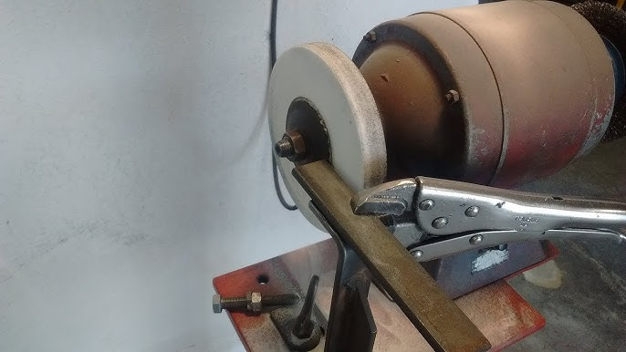

Pré-projeto de TCC
Monitoramento Inteligente da Dressagem de Rebolos
com Emissão Acústica (EA), STFT e CNN
Orientador: Dr. Wenderson Nascimento Lopes
Discente: Ronald José Contijo Apresentação: 21/08/2025, 16:20
Proposta
Tema
- Classificação do estado do rebolo (undressed/dressed) durante a dressagem.
- Uso de sinais de Emissão Acústica, análise tempo‑frequência (STFT) e Redes Convolucionais.
- Aplicação em apoio à decisão do operador, visando qualidade e custos.

Problema e Justificativa
- Momento ideal para interromper a dressagem depende da experiência do operador.
- Condição do rebolo influencia diretamente a qualidade de retificação e o custo.
- Abordagem baseada em dados pode padronizar decisões e reduzir falhas.
Objetivos
- Geral: Desenvolver um classificador binário do estado do rebolo durante a dressagem.
- Específicos:
- Coletar sinais de EA e gerar espectrogramas via STFT (janela Hanning).
- Treinar/validar uma CNN com imagens (RGB) desses espectrogramas.
- Definir métrica de avaliação (acurácia e função de perda BCE).
- Interpretabilidade: incorporar visualização do “onde a rede olha” na inferência.

Metodologia (proposta)
- Aquisição: EA no suporte do dressador; amostragem de alta taxa.
- Pré-processamento: recorte do passe de dressagem; STFT (Hanning, 4096; overlap 75%; 8192 FFT).
- Imagens: espectrogramas 0–500 kHz; normalização RGB;
180×180×3. - Modelo CNN: 3 conv (16/32/64) + MaxPooling → Flatten → Dense(64, ReLU) → Saída(1, sigmoid).
- Treino/Validação: BCE; acurácia como métrica; validação com imagens não vistas.
- Rotulagem: undressed vs dressed.
- Ferramentas: Python, TensorFlow/Keras, Jupyter.
- Viabilidade: pipeline já demonstrado em estudo-base; replicável no laboratório.
- Risco: base reduzida → ampliar dados e variações de ensaio.
“Onde a rede está olhando”
- Durante a inferência, gerar mapas de ativação sobre o espectrograma (p.ex., CAM/Grad‑CAM).
- Realçar regiões de tempo‑frequência que mais contribuem para a decisão.
- Entregável: heatmap sobreposto ao espectrograma da amostra testada.
- Objetivo: transparência e confiabilidade do classificador para o operador.
Resultados esperados
- Classificador binário confiável para undressed vs dressed na dressagem.
- Ferramenta de apoio à decisão ao operador (tempo‑real ou quase tempo‑real).
- Heatmaps explicando decisões da rede em cada amostra inferida.
Referência principal
Contijo, R. J.; Lopes, W. N.; Takeuchi, R. O. A.; de Almeida, J. P. L. S.; Aguiar, P. R.
Monitoramento Inteligente da Operação de Dressagem de Rebolos Convencionais: Uma Nova Metodologia Baseada em EA, STFT e CNN.
Ferramentas: Python, TensorFlow/Keras, Jupyter.